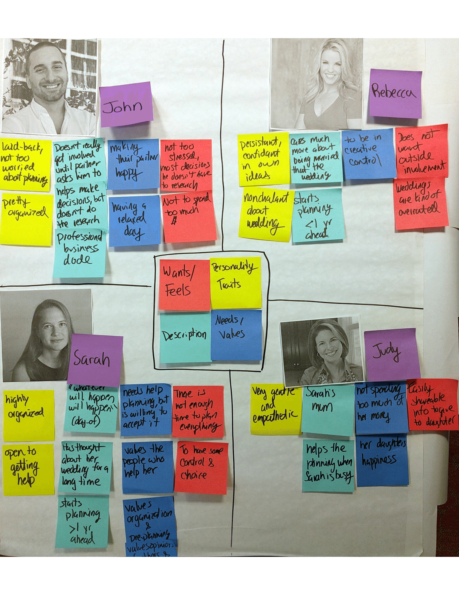
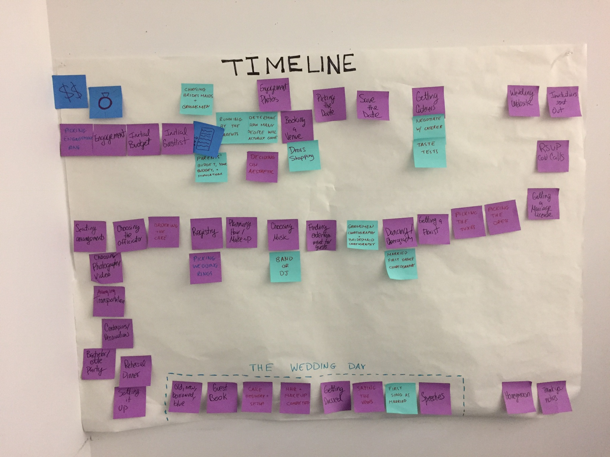
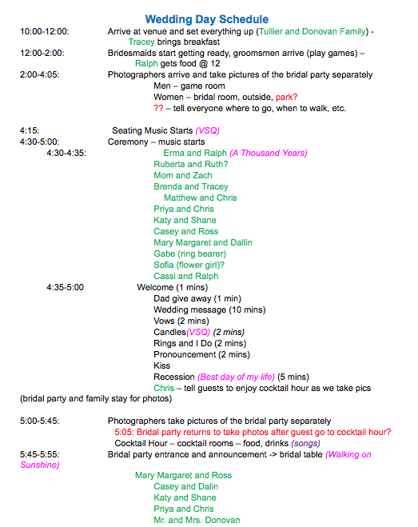
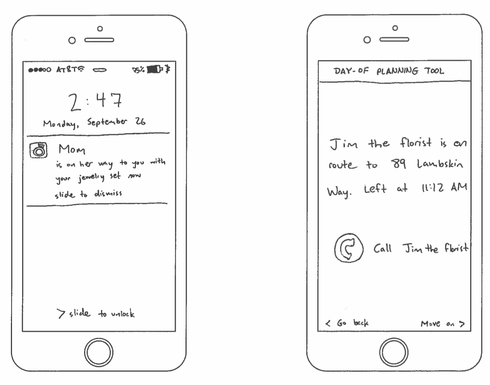

Needs Analysis
What problem are you proposing to solve?
A person’s wedding day is the beginning of their life with their significant other. They get to wear fancy clothes, walk down the aisle, eat fancy cake, and at the end of the day, leave as a married couple. Perhaps for their honeymoon? People spend months, even years planning every intricate detail of this one day, detailing when things are going to get delivered and providing continuous entertainment for their guests. Planning the wedding day details is currently stressful because there are so many pieces to set up and dependencies out of the bridal party’s control. The options are hire an expensive day-of planner, have a stressed bride, have a stressed bridal party, or have things go perfectly (rarely). We propose to solve problems that arise on the day of the wedding by increasing communication between the bride and the people setting up, and alert the bridal party of tasks they should complete when they need to be done, in a manner that is not overwhelming. If we can mitigate the issues that arise on the day of the wedding, couples can have a smooth day without needing to hire an expensive day-of planner, brides will feel less overwhelmed, and each wedding attendant will know where to be at all times. Our solution could increase communication amongst all wedding participants, which would reduce the likelihood for problems to arise, and result in a graceful wedding day.
Who matters?
The bride and the groom are the most important people. Their wedding day is for them to officially start their new lives as a married unit with a new title and celebrate with their closest family and friends.
The bride and groom families are second tier because, according to our users, they are the ones that check on details and coordinate the setup when the bride or groom cannot.
The wedding depends on their hired caterers and vendors. The caterers provide goods necessary to the wedding such as cake, food, drinks, flowers, and more. Without these goods, parts of the wedding would be empty, causing unhappiness. Therefore, the location of these caterers is utterly important to the bride.
Finally, the rest of the wedding party and guests matter because the bride and groom invited them to celebrate their big day. They are emotionally connected to the bride and groom.
How do your prospective users think about this problem/activity?
For most people, the day of the wedding is about as stressful as it can get. After months (or years) of planning this one event, planners not only need to get ready for their own big day, but also make sure everything is going smoothly for the guests, all the food is arriving on time, the venue looks as it should, and all of the people are exactly where they are supposed to be. For some brides and grooms, the idea of all of this coordination and organization is so overwhelming that they hire a day-of coordinator, who comes in and deals with the majority of these logistics so the couple can enjoy their day together. However, not every couple has this luxury, and most couples who don’t resign themselves to the idea of “whatever will happen will happen” so that if something does go wrong on their big day, they are mentally prepared to ignore it and charge ahead. On top of all the stressful coordination that has to happen on the day of the wedding, weddings themselves draw out lots of emotions (good and sometimes bad) for the couple, their families, and their friends. It is often a huge turning point in the couple’s life together, and all that emotion coupled with the logistics of the day often has the couple feeling rather drained by the end of it. Oftentimes, the couple is so busy at their own wedding that they don’t even have time to enjoy the food that they so painstakingly chose for the day. Overall, most people look forward to their big day and are excited about what will come after it in their married life, but actually getting through that day can be extremely stressful for the couple and many of the people closest to them.
What requirements must your solution satisfy?
- The solution must reduce wedding stress on the day of the wedding, not increase it by adding a difficult learning curve.
- The solution must be highly customizable so that each user has a positive experience. Many of the people we’ve spoken to have problems with the pre-laid templates and checklists because they don’t have the option to add things that are more relevant to them and remove the ones that don’t apply.
- The solution must replace the need for a day-of coordinator.
- The solution must be something that can be set-up before the day of the wedding, so that the day-of is as little stress as possible.
- The solution must not be too invasive. Too many notifications or reminders on the day of the wedding could stress the couple out more than they would have been initially.
- The solution must improve communications between the couple and anyone else helping them with day-of coordination.
What will the impact of a successful solution be?
If our solution is successful, couples will be less stressed on the day of the wedding and will have more time to appreciate their big day. For different people, this may mean different things. For some, this might mean that they have more time to spend with family that they may not normally get to see or have a more relaxing morning getting ready instead of organizing centerpieces for later in the evening. We are also hoping that this solution will help people who are helping the couple on the day of. Oftentimes, close family and friends who are heavily involved in the planning process spend a lot of time on the day-of helping the couple coordinate all of the arrivals. We hope our solution will not only make this day easier on them, but also provide a more direct line of communication so that the couple and anyone else helping to coordinate feels more confident in the timeline of the day and that they each have the most up to date information.
Development of Personas
To help synthesize our interactions with users so far, we’ve developed 4 personas that distill some of the key qualities/personalities we’ve noticed so far.

- Super organized, has been planning wedding for a while
- Started planning her wedding over a year in advance
- Gets a lot of info/help from people she knows who have gotten married recently
- Has to balance wanting to be in creative control vs. accepting help from people around her
- Has a ‘whatever will happen, will happen’ attitude towards day-of scheduling and management
Sarah
- Sarah’s mom, very kind, supportive and empathetic
- Worried about finances, but also wants to make sure her Sarah has a happy, fulfilling wedding
- Wants to be able to share information that she researches for her daughter more easily, both for day of and in general
- Has taken on a lot of responsibilities and tasks for managing the day of the event, wants Sarah to feel at ease that she’ll handle it all
Judy
- Chill and laid businessman with some experience in planning events and managing people
- Doesn’t feel compelled to be part of the researching process - comes in after the research has been done and helps make the final decision
- Not very stressed about the details of the wedding, more concerned with just being married and supporting his partner
- Doesn’t have a lot of responsibilities the day of the wedding, but really wants to make sure his partner is as little stressed as possible
John
- Rebecca is rather nonchalant about the entire process
- Wants to maintain creative control over the wedding to see her vision come through and balance her aesthetic with her partner’s
- Good at planning, and so isn’t particularly concerned about making it all come together
- Hasn’t started planning her wedding yet, even though the event is less than a year away
Rebecca
Why is “day-of planning” important to our users?
Timeline
We created a timeline of all the major “to-do” items that a wedding planner would have to do in order to plan a traditional wedding. One of the key insights we gained from creating this design artifact was 16% of the events needed to happen the day of the wedding (ex: setting up the cake, checking to make sure the music is ready).
It was difficult for our team to prioritize the tasks during the “day of.” There were several hypothetical situations where we imagined that a certain item that needed to arrive the day of was time restricted by time and the availability of people (ex: The florists could only arrive at 11 am because they have to make other flower deliveries in the morning). We also considered that because of these restrictions some events could happen at once (ex: The flowers and the band come at once). As a result, the “to do” items are scattered throughout the day and each wedding schedule will look vastly different, but requires a lot of planning ahead of time and a deep understanding of knowing exactly where and when people need to be.
Despite having a lot of “to do” items on the day of the wedding, there are still several items we left out. From the users we spoke to, several mentioned that they either delegated or planned on delegating certain “day of’” tasks to family or friends as a way to mitigate the chaos. Because this is such a case by case situation, we did not want to add another post it note (ex: Message Cynthia to confirm she picked up the flowers or ask Arjun to usher in guest) but one of aspects our group talked about is how there is a strong need for communication during “the day of” events.
Day-of Schedule
One of the users we talked to, Cassi, had a plethora of rich information regarding the intricacies of laying out the day-of schedule for her wedding. As a particularly organized bride, Cassi created a minute-by-minute playbook for all of the details of her wedding. She felt this gave her a greater level of control over the process, and put her mind at ease that she, and everyone involved in helping out, could sync up on what was supposed to be happening at any given time.
Months in advance, Cassi had already developed a schedule with this level of detail, and planned on going over it and distributing it among the many people in charge of making the wedding run smoothly. A quick analysis of this schedule reveals some key insights:
- At pretty much any given part of the day, there are many interdependent moving parts that need to be coordinated
- There are lots of stakeholders involved at different points of the day, and everyone needs to stay on top of the schedule and know where they’re supposed to be when
- Once this document is printed and distributed, it’s fully static and last-minute changes would induce stress and unneeded complications
We (and the users we’ve talked to) firmly believe that the day of the wedding should be an enjoyable, stress-free experience focused on spending time with friends and family and celebrating the beginning of a new life together with your partner. In Cassi’s case, creating a granular schedule as above achieves some components of stress alleviation, BUT (1) Cassi is extraordinarily organized, and not all couples create such schedules in advance and (2) Even this system has drawbacks.
So what? Why is this important? Every user we’ve talked to has demonstrated varying levels of stress about the mechanics of planning and executing the day-of schedule for their wedding. While some personalities are more able to deal with the uncertainties of coordinating and puppeteering a complex event (and are accordingly less prone to breakdowns when problems inevitably arise), others are quick to lose tempers and chill, as vendors fail to show on time, the schedule shifts, and their control over making every detail perfect fades.
For both ends of the spectrum, there’s an immense opportunity to do some preventative care and patch a lot of potential sources for stress before it becomes a defining characteristic of the day. That’s where we come in.
Engagement Design Insights
In one of our engagements with a user, the user mentioned that the problem with several of our inspirational designs that attempted to simplify the entire process of wedding planning is the giant checklist format. These checklists stressed the user out just by looking at them and were too static and non-customizable, focusing on details that the user did not care about in regards to their own wedding.
During the engagement, the user designed an interface that they wish they could use instead of the hundreds-of-items-long checklist which would only show them a single task at a time and encourage them, whenever they have free time, to make headway on this task. In choosing which area of wedding planning to focus on developing a solution for, we ended up choosing day-of planning because we felt that we could provide the most impact to our users in this space and because we found it to be a really interesting interface design problem.
We are not proposing a solution to the day-of planning interface but rather, we realized that we could apply the design the user quickly sketched out during the engagement to our day-of planning problem to help us start framing some use cases. Below are mockups of the user’s particular design geared towards day-of planning.
Already, we can start to see some value this sort of interface would provide for the user, who is trying to enjoy the day of their wedding while also having to juggle the responsibilities that come with planning the event. This type of interface increases visibility to the planners (the bride and the groom) of what needs to be addressed by them and what doesn’t. Simultaneously, if we allow other people in the wedding party (such as the parents) to see the same screens as the planners and potentially handle/help out with situations that arise on the day of the wedding, we effectively also have a task distribution tool. For example, if the florist is late but the bride is getting dressed, a member of the wedding party could use this interface and notice that they can contact the florist and plan accordingly.
This system of distributed day-of coordination allows the user to focus their attention and energy on what matters during their big day. A lot of the users we have talked to point out that the planning of the wedding isn’t really what excites them and maybe isn’t even really for them as much as it is for their guests and family. Our users are more excited about starting their married lives together and so our value proposition is in minimizing and distributing the amount of stress the bride and the groom have to experience on the day of their wedding while doing our best to ensure everything still goes according to plan.